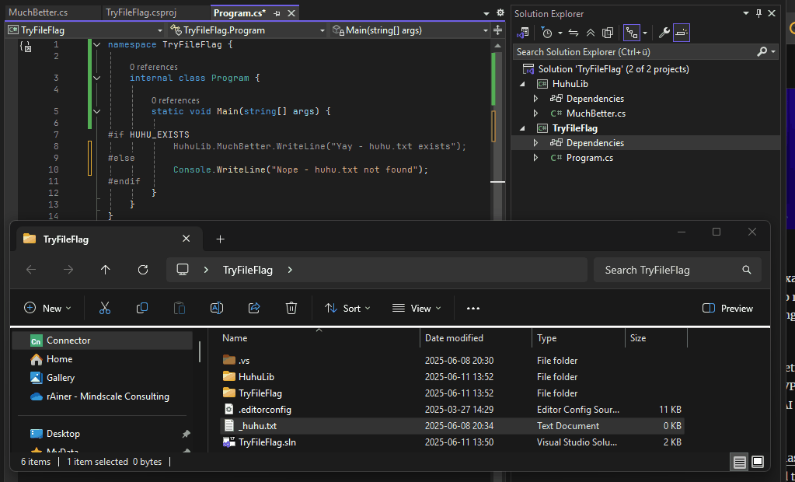
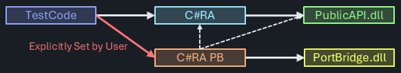

External Libraries
Static Dependencies
- IG-XL (sic!)
- hopefully nothing else
Conditional Dependencies
Conditional Project Reference
In scenarios where PortBridge is installed and licensed, it's dll must be referenced by the test code projects making use of it. Typically, such a reference is a hard dependency, and the project can not even build without it - even if it was not directly used.
On the other hand, a configuration without PortBridge will typically not have the software installed. There is no dll that could be referenced to satisfy the compiler.
To address both use cases, a conditional project reference is added:
<PropertyGroup>
<!-- Check if external config or marker file exists -->
<HuhuExists Condition="Exists('..\huhu.txt')">true</HuhuExists>
</PropertyGroup>
For this to work, new SDK project files are required. First, a custom MSBuild property HuhuExists is defined. It's set to true if a file ..\huhu.txt exists. The relative path is from the location of the .csproj file, so in typical scenarios it would be next to the .sln file.
Since that custom property would be undefined in case the file does not exist, it's being set to false in that case:
<PropertyGroup>
<!-- Default value if the flag file doesn't exist -->
<HuhuExists Condition=" '$(HuhuExists)' == '' ">false</HuhuExists>
</PropertyGroup>
Now, the flag can be used as a condition to establish the project reference:
<ItemGroup Condition=" '$(HuhuExists)' == 'true' ">
<ProjectReference Include="..\HuhuLib\HuhuLib.csproj" />
</ItemGroup>
Conditional Calls to PortBridge API
The same mechanism can be used for conditional calls to the PortBridge API. For that to work, a compiler constant is defined:
<PropertyGroup Condition=" '$(HuhuExists)' == 'true' ">
<DefineConstants>$(DefineConstants);HUHU_EXISTS</DefineConstants>
</PropertyGroup>
With that, code can be conditionally enabled / disabled for the build process:

Specific APIs are fully accessible including intellisense and type-ahead when that is intended, and alternative implementations are used when that isn't available.
Risks
The potential need for substantial code sections using #if compiler directives, and the mechanics involved with the conditional project references will add complexity to the code base for this option. The admittedly high risk of overburdening maintenance cost will be mitigated by careful choices and close monitoring of the actual implementation.
Alternatives Considered
The agreement on the proposed model above was the result of controversial discussions and significant design work in alternative approaches. Either model has a significant impact to the project and comes with tough implications, some of which are hard to fully foresee in the current project state. The eventual choice was made because the proposed model seemed to have the least limitations for future project enhancements. Prototyping of the alternatives could not fully confirm feasibility of either.
Should these assumptions turn out incorrect, the project may switch to one of the following options, if they end up better serving the needs.
Dedicated Extension Project
The conditional project dependencies for external libraries could be handled by a a separate, project specific (like C#RA_XYZ) extension project, which statically references the library dll. In the extension project, all library specific functionalities are defined and blended into the regular C#RA use model.
The user opts into Library use by explicitly setting a project reference to the C#RA Library extension project.

Internally, the C#RA library extension project follows the same structure as the main project, it only creates a logical separation for library specific language. It is integrated into the release package for all users. It's limited to separate language for the extension feature, possibly also substituting functionality of the base class. It wouldn't however allow seamlessly blending additional coverage into the existing use model.
Common Interfaces / Factory Pattern / Dynamically Loaded References
Alternative (Library / no Library) implementations could also be achieved with a common wrapper interface class, and using a factory pattern to instantiate the relevant feature at runtime. The following downsides were captured - and led to deciding against this model:
- runtime vs. design time linking: intellisense, type-ahead of the original library implementation can't be used as the project isn't known at design time.
- additional abstraction layer: Library programming would have to go through a common interface, disguising the originally intended use model for the feature. Given the Library is very much in development, this additional layer was considered a big risk.
- common interface would be more restrictive in offering custom functionality of either option
Questions
- How to handle different versions of library dependencies?
- How to support multiple versions? Customer A needs 1, customer B needs 2?
- Does that mean we add another dimension (i.e., duplicate) to all unit and integration testing efforts for every library added? Likely yes ...